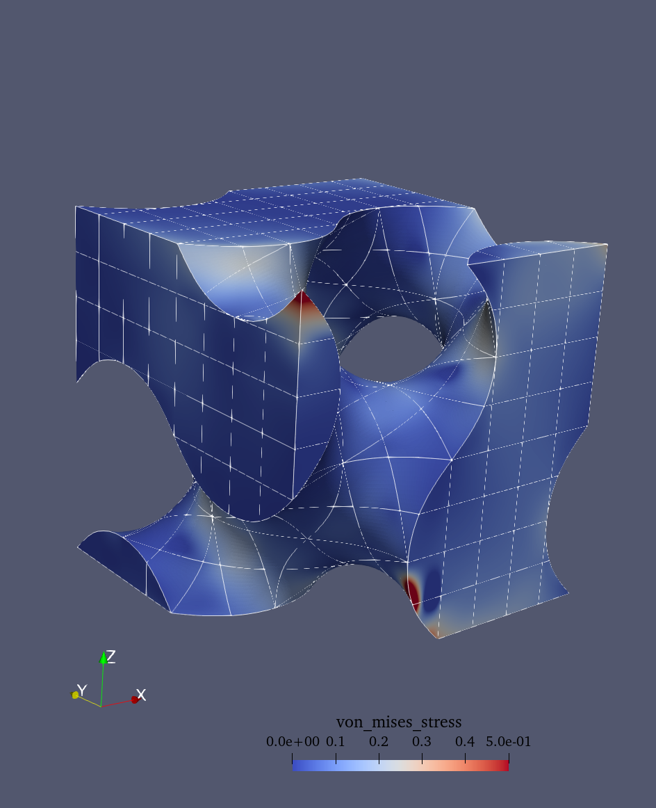
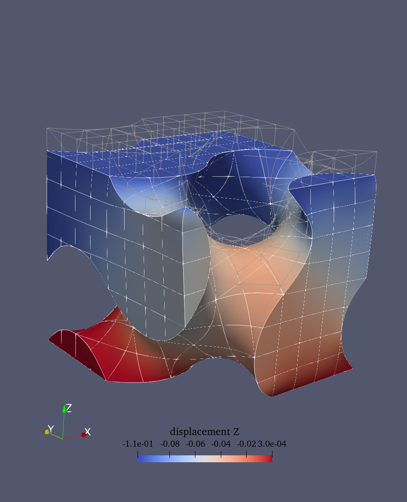

Linear elasticity problem
This demo is implemented in demo_elasticity.py. It
illustrates:
How to solve a linear elasticity problem using QUGaR and FEniCSx.
How to impose Dirichlet conditions on a vector field.
How to visualize vector solutions on an unfitted domain.
Problem definition
Let us consider the domain \(\Omega \subset \mathbb{R}^3\), immersed in a mesh \(\mathcal{T}(\Omega)\) (see Divergence theorem demo for further details about the immersed setting), and the vector finite element space \(V\) defined over the mesh \(\mathcal{T}(\Omega)\). The linear elasticity problem reads: Finding \(\mathbf{u} \in V\) such that
where \(\mathbf{f}\) is a body force, \(\mathbf{g}\) is a traction force, and \(\mathbf{n}\) denotes the outward directed boundary normal. The stress tensor \(\sigma\) is related to the strain tensor \(\varepsilon\) by the constitutive relation:
where \(\mu\) and \(\lambda\) are the Lamé parameters, \(\text{tr}\) is the trace operator, and \(I\) is the identity tensor. The strain tensor is defined as:
The variational problem reads: find \(\mathbf{u} \in V_D\) such that
where \(V_D\) is the space of functions that satisfy the Dirichlet boundary conditions, \(V_0\) is the space of test functions that vanish on the Dirichlet boundary \(\Gamma_D\), and \(a(\mathbf{u}, \mathbf{v})\) and \(L(\mathbf{v})\) are the bilinear and linear forms defined as:
In this demo we consider a domain \(\Omega\) that is a Schoen gyroid inside a cube \([0,1]^3\) (see figure below). For the boundary conditions, we fix the bottom face (\(z=0\)) and apply a compression on the top face (\(z=1\)).
Schoen gyroid unfitted domain.
Implementation
Modules import
First we add the needed modules and functions:
from qugar.utils import has_FEniCSx, has_PETSc
if not has_FEniCSx:
raise ValueError("FEniCSx installation not found is required.")
if not has_PETSc:
raise ValueError("petsc4py installation not found is required.")
from pathlib import Path
from mpi4py import MPI
import dolfinx.fem
import dolfinx.fem.petsc
import dolfinx.io
import numpy as np
import ufl
from dolfinx import default_scalar_type as dtype
import qugar
import qugar.impl
from qugar.dolfinx import LinearProblem
from qugar.mesh import create_unfitted_impl_Cartesian_mesh
Geometry and mesh
We define the Schoen gyroid geometry using an implicit function.
impl_func = qugar.impl.create_Schoen([1.0, 1.0, 1.0])
We create an unfitted Cartesian mesh
(corresponding to \(\mathcal{T}\)) in which we embed the domain \(\Omega\).
This is a Cartesian mesh corresponding to the domain \([0,1]^3\) and
with n_cells cells per direction.
n_cells = 8
unf_mesh = create_unfitted_impl_Cartesian_mesh(
MPI.COMM_WORLD, impl_func, n_cells, exclude_empty_cells=True, dtype=dtype
)
dim = unf_mesh.topology.dim
Material parameters and spaces
We define the material parameters for our elasticity problem:
# Young's modulus and Poisson's ratio
E, nu = 1.0, 0.3
# Lamé parameters
mu = E / (2.0 * (1.0 + nu))
lmbda = E * nu / ((1.0 + nu) * (1.0 - 2.0 * nu))
and the finite element space \(V\) over the unfitted mesh
(corresponding to the mesh \(\mathcal{T}\)) needed to define the test
and trial functions \(\mathbf{u}\) and \(\mathbf{v}\).
The finite element space is defined as a vector Lagrange space of the given
degree (2 in this case).
degree = 2
V = dolfinx.fem.functionspace(unf_mesh, ("Lagrange", degree, (dim,)))
u, v = ufl.TrialFunction(V), ufl.TestFunction(V)
Boundary conditions
We define the Dirichlet boundary conditions:
Bottom face (z = 0) is fixed: u = (0, 0, 0)
Top face (z = 1) has a prescribed displacement: u = (0, 0, -0.1)
# Bottom face (fixed)
bottom_facets = dolfinx.mesh.locate_entities_boundary(
unf_mesh, dim=(dim - 1), marker=lambda x: np.isclose(x[2], 0.0)
)
bottom_dofs = dolfinx.fem.locate_dofs_topological(V=V, entity_dim=2, entities=bottom_facets)
u_bottom = np.zeros(dim, dtype=dtype)
bc_bottom = dolfinx.fem.dirichletbc(value=u_bottom, dofs=bottom_dofs, V=V)
# Top face (compression)
top_facets = dolfinx.mesh.locate_entities_boundary(
unf_mesh, dim=(dim - 1), marker=lambda x: np.isclose(x[2], 1.0)
)
top_dofs = dolfinx.fem.locate_dofs_topological(V=V, entity_dim=2, entities=top_facets)
u_top = np.zeros(dim, dtype=dtype)
u_top[-1] = -0.1 # Apply compression along the last direction
bc_top = dolfinx.fem.dirichletbc(value=u_top, dofs=top_dofs, V=V)
# List of boundary conditions
bcs = [bc_bottom, bc_top]
Strain, stress and variational formulation
We define the strain and stress tensors:
def epsilon(u):
return ufl.sym(ufl.grad(u))
def sigma(u):
return 2.0 * mu * epsilon(u) + lmbda * ufl.tr(epsilon(u)) * ufl.Identity(len(u))
With the strain and stress defined, we can now define the variational formulation of the elasticity problem. We set no external forces, so the linear form only includes contributions from the boundary conditions.
# Body force (zero for this demo)
f = dolfinx.fem.Constant(unf_mesh, (dtype(0.0),) * dim)
# Quadrature degree
# Bilinear and linear forms
a = ufl.inner(sigma(u), epsilon(v)) * ufl.dx
L = ufl.dot(f, v) * ufl.dx
Linear system solution
We solve the associated linear system
\(A\mathbf{u} = \mathbf{b}\), where \(\mathbf{u}\) is the
solution of the problem. The solution is stored in a
a finite element function uh defined over the same finite
element space \(V\) as the trial functions.
We use a direct solver (since the problem size is small) with a Jacobi preconditioner to help with possible ill-conditioning from the unfitted domain.
petsc_options = {
"ksp_type": "preonly",
"pc_type": "cholesky",
"ksp_diagonal_scale": True, # Jacobi preconditioner
}
problem = LinearProblem(a, L, bcs=bcs, petsc_options=petsc_options)
problem.solve()
uh = problem.u
Result analysis
We can compute the strain and stress fields from the solution. This helps in understanding the mechanical behavior of the structure.
First we create function for strain and stress:
V_tensor = dolfinx.fem.functionspace(unf_mesh, ("Lagrange", degree, (dim, dim)))
strain = dolfinx.fem.Function(V_tensor)
stress = dolfinx.fem.Function(V_tensor)
strain_expr = dolfinx.fem.Expression(epsilon(uh), V_tensor.element.interpolation_points())
strain.interpolate(strain_expr)
stress_expr = dolfinx.fem.Expression(sigma(uh), V_tensor.element.interpolation_points())
stress.interpolate(stress_expr)
Then we can compute the von Mises stress, which is a scalar measure of the intensity of the stress state. It is often used in engineering applications to predict yielding of materials under complex loading conditions. The von Mises stress is defined as:
V_scalar = dolfinx.fem.functionspace(unf_mesh, ("Lagrange", degree))
von_mises = dolfinx.fem.Function(V_scalar)
s = sigma(uh)
s_dev = s - (1 / 3) * ufl.tr(s) * ufl.Identity(len(uh))
von_mises_expr = dolfinx.fem.Expression(
ufl.sqrt((3 / 2) * ufl.inner(s_dev, s_dev)), V_scalar.element.interpolation_points()
)
von_mises.interpolate(von_mises_expr)
Visualization
Finally, we visualize the obtained displacement, strain, and stress by generating reparameterization meshes and interpolating the solutions.
# Create reparameterization meshes
rep_degree = 3
reparam = qugar.reparam.create_reparam_mesh(unf_mesh, degree=rep_degree, levelset=False)
rep_mesh = reparam.create_mesh()
rep_mesh_wb = reparam.create_mesh(wirebasket=True)
# Create function spaces on the reparameterized meshes
Vrep_tensor = dolfinx.fem.functionspace(rep_mesh, ("CG", rep_degree, (dim, dim)))
Vrep_vec = dolfinx.fem.functionspace(rep_mesh, ("CG", rep_degree, (dim,)))
Vrep_scalar = dolfinx.fem.functionspace(rep_mesh, ("CG", rep_degree))
Vrep_wb_vec = dolfinx.fem.functionspace(rep_mesh_wb, ("CG", rep_degree, (dim,)))
# Interpolate displacement
interp_data_vec = qugar.reparam.create_interpolation_data(Vrep_vec, V)
uh_rep = dolfinx.fem.Function(Vrep_vec)
uh_rep.interpolate_nonmatching(uh, *interp_data_vec)
uh_rep.name = "displacement"
# Interpolate stress and strain tensors
interp_data_tensor = qugar.reparam.create_interpolation_data(Vrep_tensor, V_scalar)
stress_rep = dolfinx.fem.Function(Vrep_tensor)
stress_rep.interpolate_nonmatching(stress, *interp_data_tensor)
stress_rep.name = "stress"
strain_rep = dolfinx.fem.Function(Vrep_tensor)
strain_rep.interpolate_nonmatching(strain, *interp_data_tensor)
strain_rep.name = "strain"
# Interpolate von Mises stress
interp_data_scalar = qugar.reparam.create_interpolation_data(Vrep_scalar, V_scalar)
von_mises_rep = dolfinx.fem.Function(Vrep_scalar)
von_mises_rep.interpolate_nonmatching(von_mises, *interp_data_scalar)
von_mises_rep.name = "von_mises_stress"
# Interpolate solution to wirebasket mesh for better visualization
interp_data_wb = qugar.reparam.create_interpolation_data(Vrep_wb_vec, V)
uh_rep_wb = dolfinx.fem.Function(Vrep_wb_vec)
uh_rep_wb.interpolate_nonmatching(uh, *interp_data_wb)
uh_rep_wb.name = "displacement_wirebasket"
Finally, we export the meshes to VTK files and visualize them
using ParaView. In ParaView, you can use the Warp By Vector filter
with the displacement field to visualize the deformed structure.
results_folder = Path("results")
results_folder.mkdir(exist_ok=True, parents=True)
filename = results_folder / "demo_elasticity"
with dolfinx.io.VTKFile(rep_mesh.comm, filename.with_suffix(".pvd"), "w") as vtk:
vtk.write_function(uh_rep)
vtk.write_function(uh_rep_wb)
vtk.write_function(stress_rep)
vtk.write_function(strain_rep)
vtk.write_function(von_mises_rep)
The results can be visualized in ParaView (see figure bloew). To visualize the deformed structure:
Open the VTK file in ParaView
Select the mesh with the displacement field
Apply the
Warp By Vectorfilter using the displacement fieldAdjust the scale factor if needed to make deformations more visible
Color by von Mises stress to see stress concentrations
Optionally, a ParaView state file demo_elasticity.pvsm is provided
in the demo/assests folder.
von Mises stress distribution |
Deformed configuration |
|---|---|
 |
 |